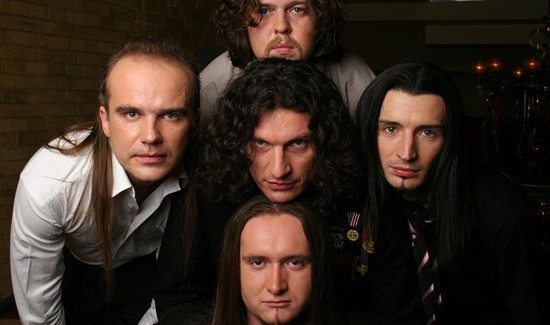

«Скрябін» — український музичний гурт, що за час своєї творчої активності пройшов шлях від синті-попу, постпанку і техно до поп-року та поп-музики. Склад гурту також неодноразово змінювався. Єдиним постійним учасником колективу з часу його заснування і до своєї смерті був Андрій «Кузьма» Кузьменко. Як правило, музику гурту поділяють на «старий» (приблизно до 2003 року) та «новий» (до 2015) періоди[1]. «Скрябін» є першим україномовним гуртом у жанрі синті-попу та альтернативної електроніки. За час творчої діяльності гурт видав сімнадцять студійних альбомів, два збірники, дев'ять макси-синглів, один концертний альбом та багато інших музичних проєктів.
«Скрябін» вважають піонерами української електронної музики. За весь час творчості, гурт увібрав у себе суміш різноманітних жанрів та стилів. Перший альбом «Чуєш біль» межував між синті-поп звучанням та новою хвилею. З кінця 1989 до 1991 року музиканти експериментували з піснями, внаслідок чого звучання наближалось навіть до психоделії (треки «Чуєш Біль», «Вошо»). Загалом перші пісні відрізнялися використанням на першому плані синтезаторів, бас-гітари та ударних, що було характерним у виконанні пост-панк гуртів. Після запису альбому «Мова Риб» у 1992 році, музиканти звернулись до техно музики. В той час цей жанр був дуже популярним і завойовував популярність у молоді по всьому світі. Починаючи грати техно, «скрябіни» не забували і як основу більш мелодійний синті-поп. Сам Андрій Кузьменко неодноразово наголошував про свою любов до гурту «The Cure», чий вплив також був досить значним — від депресивно-романтичних текстів у ліриці до аранжування інструментів. Але, на відміну від англійського колективу, «Скрябін» ніколи не мав постійного гітариста, що вплинуло на музичну палітру гурту. Іншим предтечею для майбутнього матеріалу став культовий електро-гурт «Depeche Mode». Захопившись «The Cure» і «Depeche Mode», поєднавши темну романтику та електроніку, «Скрябін» створив альбом «Технофайт». Такі треки як «Велика стіна», «Коли не буде нас», «То мій голос», «Нейлоновий час» сьогодні відносять до музики дарквейв. В середині 1990-х років «Скрябін» повернувся до схеми синті-поп — техно, випустивши альбом «Птахи», трохи схожий за характером звучання на роботи німецького діджея «Maruscha». Ще одним гуртом, що вплинув на музику «Скрябіна», називають неоромантичний «Camouflage». На альбомі «Казки», частково «Мові Риб», «Технофайті» цей настрій передає особливості стилю. В 1998 році гурт випустив максі-сингл «Танець Пінгвіна», який більш схожий на танцювальний рейв (задовго до цього Кузьма і Шура записали рейв-проєкт Molotov 20). В 1998—1999 роках гурт записав «Хробак», наблизивши звучання від звичного синті-поп до дарквейву, і навіть EBM та альтернативного року. Ця робота на прикладі «Ми як машини» виявила вплив німецького гурту «Kraftwerk». Також у цьому альбомі виконавці використовували семпли промислових заводів та інших механічних звуків, характерних для електро-індастріалу. Перевиданий «Технофайт 1999» та «Стриптиз» найближчі до пост-панку (альтернативний рок) з елементами електронного звучання.
Після розпаду старого колективу, змінилися настрій і напрям у творчості. Головною зміною став перехід від електроніки до більш живого поп-рокового звучання. Таким чином електронну складову було зведено до мінімуму. Альбом «Модна країна», записаний хоч і в старому складі, але вже в іншому, легшому поп-виконанні. В 2002 році Скрябін видав платівку під назвою «Озимі люди», де завдяки таким пісням, як «Любити платити», «Сам собі країна», «Герой» сформувався остаточний напрямок музики подальших років. Після виходу синглу з Іриною Білик «Мовчати» це ще більше підтвердилось, використовуючи звичні канони поп-музики. Останнім етапом трансформації став випуск «Натури», коли від звуків нової хвилі, майже нічого не залишилось. Треки «Спи собі сама», «Давай з тобою займатися любов'ю», «Наш останній танець», «Я сховаю тебе (любов)» потрапили в ротацію комерційного музичного телеканалу M1.